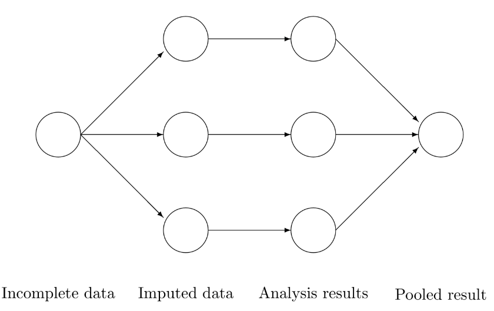
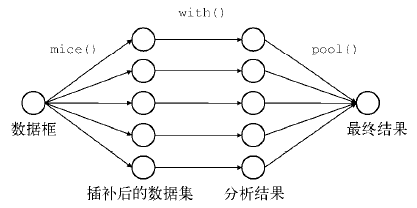
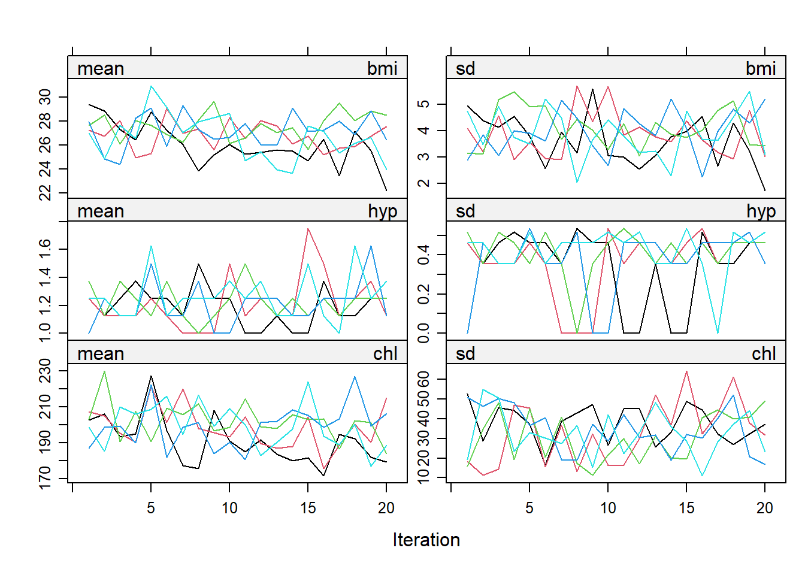
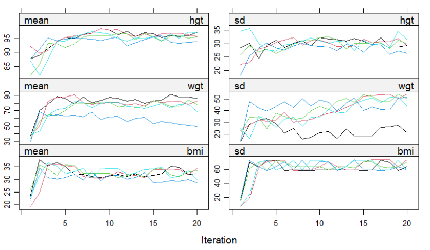
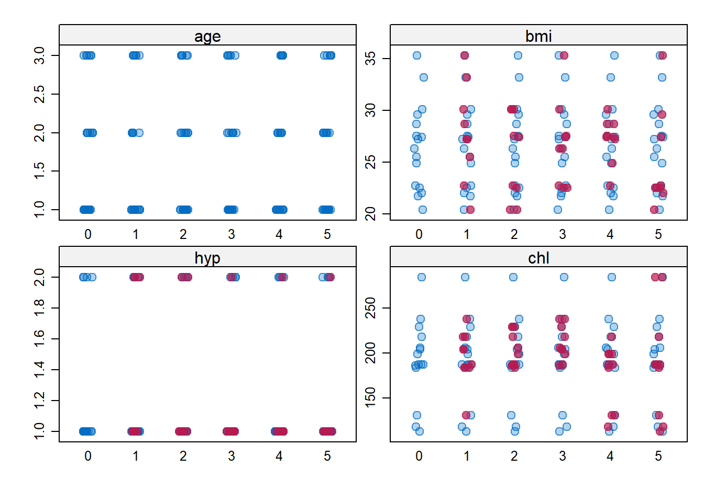
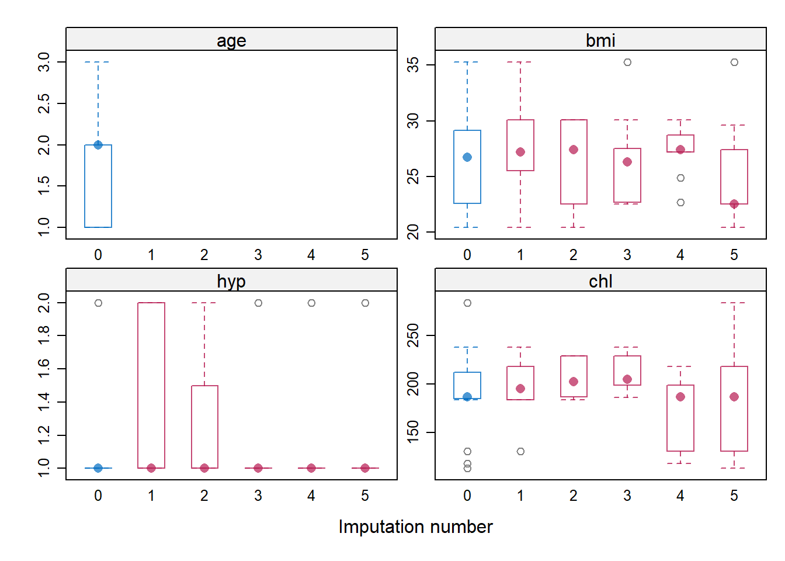
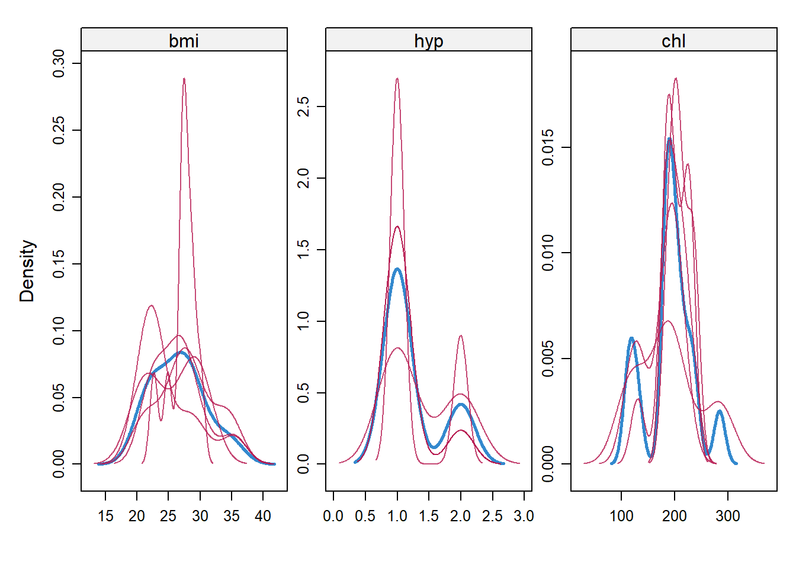

library(mice)
str(nhanes)
## 'data.frame': 25 obs. of 4 variables:
## $ age: num 1 2 1 3 1 3 1 1 2 2 ...
## $ bmi: num NA 22.7 NA NA 20.4 NA 22.5 30.1 22 NA ...
## $ hyp: num NA 1 1 NA 1 NA 1 1 1 NA ...
## $ chl: num NA 187 187 NA 113 184 118 187 238 NA ...43 mice多重插补
多重插补（multiple imputation，MI）的思想是由Donald B. Rubin在19世纪70年代提出来的，它是相对于simple-imputation而言的，大多数的插补方法都是只插补一次，比如均数插补、中位数插补、众数插补、随机森林插补、KNN插补等，但是多重插补可以对缺失值插补多次，得到多个结果，并且不同的变量可以使用不同的方法进行插补，这样可以得到更准确的结果，降低误差。
多重插补的示意图如下，对于一个有缺失值的数据，MI会插补多次，得到多个插补后的数据，然后对这多个结果进行分析，并对分析结果进行汇总：

目前在医学相关的文献中越来越多地见到多重插补的身影，mice是R语言中用的最多的多重插补R包，下面我们就以mice为例介绍下多重插补的使用。
43.1 加载数据和R包
首先我们加载mice包，并使用自带的nhanes数据进行演示。
这个数据一共25行，4个变量，除了age这个变量外都有缺失值，各个变量的类型如下所示：
使用mice进行缺失值插补非常简单，如果你不考虑各种细节的话，使用起来就是3行代码而已，主要使用的函数和作用如下所示：
mice()：对缺失值进行插补with()：对多个插补后的结果进行分析，注意这里的with()是mice包里的函数pool()：对分析结果进行汇总

43.2 多种使用方法
假如我们的研究目的是：分析对chl这个变量有影响的因素，或者说是使用age、bmi、hyp预测chl的值，因为chl这个变量是连续型变量，此时我们可以使用lm()建立多元线性回归模型：
summary(lm(chl ~ age + bmi + hyp, data = nhanes))
##
## Call:
## lm(formula = chl ~ age + bmi + hyp, data = nhanes)
##
## Residuals:
## Min 1Q Median 3Q Max
## -31.315 -15.782 0.576 6.315 59.335
##
## Coefficients:
## Estimate Std. Error t value Pr(>|t|)
## (Intercept) -80.971 61.772 -1.311 0.22238
## age 55.210 14.290 3.864 0.00383 **
## bmi 7.065 2.052 3.443 0.00736 **
## hyp -6.222 23.177 -0.268 0.79441
## ---
## Signif. codes: 0 '***' 0.001 '**' 0.01 '*' 0.05 '.' 0.1 ' ' 1
##
## Residual standard error: 29.05 on 9 degrees of freedom
## (12 observations deleted due to missingness)
## Multiple R-squared: 0.7339, Adjusted R-squared: 0.6452
## F-statistic: 8.274 on 3 and 9 DF, p-value: 0.005915此时虽然也能得到结果，但是这个是删除了缺失值之后的结果(12个观察量被删除了)，lm()默认的对缺失值的默认操作就是直接删除，我们可以修改一下，但是会报错：
lm(chl ~ age + bmi + hyp, data = nhanes, na.action = na.fail())
## Error in na.fail.default() : 缺少参数"object",也没有缺省值此时我们可以使用mice对数据进行多重插补。
mice在3.0版本以后增加了对管道符的支持，所以现在使用起来有多种语法，下面给大家介绍常见的两种使用方法。
43.2.1 常规用法
常规用法就是3行代码，分别做3件事：
- 插补
- 分析
- 汇总
# 进行插补，默认插补5次
imp <- mice(nhanes, seed = 123, print = FALSE, m=5)
# 对5个结果进行分析
# chl是连续型，所以用lm；二分类就用glm
fit <- with(imp, lm(chl ~ age + bmi + hyp))
# 汇总结果
est1 <- pool(fit)
# 查看汇总结果
summary(est1)
## term estimate std.error statistic df p.value
## 1 (Intercept) 10.312370 73.181125 0.14091571 8.137530 0.89136250
## 2 age 27.218585 12.835482 2.12057358 10.608141 0.05841745
## 3 bmi 4.958399 2.490281 1.99109978 7.079015 0.08629345
## 4 hyp 1.955541 21.541135 0.09078171 14.986247 0.92886832这样我们就得到了最终的结果，可以和前面的回归分析结果对比一下，不管是变量系数还是p值、标准误等，都有很大的不同。
以上是5次分析汇总（不是平均）后的结果，如果要单独提取某次插补后的回归分析结果，可以通过以下方式：
# 提取第2次插补后的回归分析结果
summary(fit$analyses[[2]])
##
## Call:
## lm(formula = chl ~ age + bmi + hyp)
##
## Residuals:
## Min 1Q Median 3Q Max
## -48.746 -24.916 -2.562 8.620 81.342
##
## Coefficients:
## Estimate Std. Error t value Pr(>|t|)
## (Intercept) 40.313 52.734 0.764 0.4531
## age 18.783 10.760 1.746 0.0955 .
## bmi 4.198 1.731 2.425 0.0244 *
## hyp 5.211 20.693 0.252 0.8036
## ---
## Signif. codes: 0 '***' 0.001 '**' 0.01 '*' 0.05 '.' 0.1 ' ' 1
##
## Residual standard error: 34.55 on 21 degrees of freedom
## Multiple R-squared: 0.2957, Adjusted R-squared: 0.1951
## F-statistic: 2.94 on 3 and 21 DF, p-value: 0.056843.2.2 tidy用法
以上代码可以使用管道符的写法，更加简洁美观，效果是一样的：
est2 <- nhanes |>
mice(seed = 123, print = FALSE) |>
with(lm(chl ~ age + bmi + hyp)) |>
pool()
summary(est2)
## term estimate std.error statistic df p.value
## 1 (Intercept) 10.312370 73.181125 0.14091571 8.137530 0.89136250
## 2 age 27.218585 12.835482 2.12057358 10.608141 0.05841745
## 3 bmi 4.958399 2.490281 1.99109978 7.079015 0.08629345
## 4 hyp 1.955541 21.541135 0.09078171 14.986247 0.92886832和上面的常规写法完全一致。
43.3 提取插补结果
分析多重插补数据的合适方法是在每个插补数据集中拟合模型，然后再汇总多个拟合结果，也就是mice-with-pool三部曲。所以作者并不推荐提取其中某一次插补的结果进行后续分析。如果非要提取也是可以的。
mice默认可以插补5次，我们可以提取其中某一次插补的结果，比如提取第2次插补的结果：
imputed_df <- mice::complete(imp, action = 2)
md.pattern(imputed_df,plot = F) # 没有缺失值了
## /\ /\
## { `---' }
## { O O }
## ==> V <== No need for mice. This data set is completely observed.
## \ \|/ /
## `-----'
## age bmi hyp chl
## 25 1 1 1 1 0
## 0 0 0 0 0到底选择哪一次插补的结果没有标准，可以试试选择表现更好的，比如R2更大的，AIC更小的，等等。
43.4 不推荐的用法
虽然作者也没说到底用哪次插补的结果，但是明确说了不推荐的用法，参考：https://stefvanbuuren.name/fimd/workflow.html
43.4.1 平均多个结果
对多个插补后的数据集计算平均值，作为最终的结果，这种做法是不推荐的。
以下是对5次插补结果取平均值的示例代码，其中的ave就是取平均值后的插补后的数据：
library(magrittr)
library(dplyr)
# 获取5次平均的结果
ave <- nhanes %>%
mice(seed = 123, print = FALSE) %>%
mice::complete("long") %>%
group_by(.id) %>%
summarise_all(.funs = mean) %>%
select(-.id, -.imp)
# 用平均结果做后续分析
est8 <- lm(formula = chl ~ age + bmi + hyp, data = ave)
#summary(est8)这个结果和上面的正确用法的结果相差甚大，作者不推荐使用，因为这种方法和常规的simple-imputation的思想一样，具有常规方法的所有缺点。
43.4.2 堆叠多个结果
这个也很简单，就是把5次插补的结果直接按行合并起来，比如nhanes这个数据一共25行，插补5次后，再按行合并5次的插补结果，于是就有25*5=125行数据，用这个数据作为最终的结果进行后续分析。这种也是作者不推荐的。
stacked <- nhanes %>%
mice(seed = 123, print = FALSE) %>%
mice::complete("stacked")
est9 <- lm(formula = chl ~ age + bmi + hyp, data = stacked)这种方法计算的回归系数相比平均法更加准确一点，但是t值、标准误等也是不准的。
43.5 插补细节探索
如果正常使用的话就是3步即可，不需要其他操作。但是实际使用中总是需要各种DIY操作的，mice包的每一步都可以自己控制，非常强大。
拿到一个有缺失值的数据后，首先是探索缺失值，我们可以用mice包里的函数，也可以用其他R包，比如之前介绍过的naniar。这里就不给大家演示这一步了。
直接看一下mice的一些使用细节，并介绍一些比较重要的参数。
mice(
data,
m = 5, # 插补次数，默认5次，不用太多，一般5次就够用了
method = NULL,
predictorMatrix,
ignore = NULL,
where = NULL,
blocks,
visitSequence = NULL,
formulas,
blots = NULL,
post = NULL,
defaultMethod = c("pmm", "logreg", "polyreg", "polr"),
maxit = 5,
printFlag = TRUE,
seed = NA,
data.init = NULL,
...
)43.5.1 插补方法
method：插补时使用的方法，默认方法由defaultMethod参数指定，一般是4种方法(参考上面的代码)，对应4种数据类型，分别是连续型变量、二分类、无序多分类、有序多分类。
mice支持36种插补方法，可通过methods(mice)查看支持的方法：
methods(mice)
## [1] mice.impute.2l.bin mice.impute.2l.lmer
## [3] mice.impute.2l.norm mice.impute.2l.pan
## [5] mice.impute.2lonly.mean mice.impute.2lonly.norm
## [7] mice.impute.2lonly.pmm mice.impute.cart
## [9] mice.impute.jomoImpute mice.impute.lasso.logreg
## [11] mice.impute.lasso.norm mice.impute.lasso.select.logreg
## [13] mice.impute.lasso.select.norm mice.impute.lda
## [15] mice.impute.logreg mice.impute.logreg.boot
## [17] mice.impute.mean mice.impute.midastouch
## [19] mice.impute.mnar.logreg mice.impute.mnar.norm
## [21] mice.impute.mpmm mice.impute.norm
## [23] mice.impute.norm.boot mice.impute.norm.nob
## [25] mice.impute.norm.predict mice.impute.panImpute
## [27] mice.impute.passive mice.impute.pmm
## [29] mice.impute.polr mice.impute.polyreg
## [31] mice.impute.quadratic mice.impute.rf
## [33] mice.impute.ri mice.impute.sample
## [35] mice.mids mice.theme
## see '?methods' for accessing help and source code
# 查看每种方法的详细信息和支持的数据类型
#?mice.impute.2l.norm 在插补的过程中会自动对不同的变量选择不同的插补方法，可以通过以下方式查看每个变量使用的插补方法：
imp <- mice(nhanes, seed = 123, print = FALSE, m=5)
imp
## Class: mids
## Number of multiple imputations: 5
## Imputation methods:
## age bmi hyp chl
## "" "pmm" "pmm" "pmm"
## PredictorMatrix:
## age bmi hyp chl
## age 0 1 1 1
## bmi 1 0 1 1
## hyp 1 1 0 1
## chl 1 1 1 0这个imp是一个mids对象，在中间部分可以看到age下面是""，表示没有进行插补，因为它没有缺失值，其余3个变量都是用的pmm法。
也可以单独查看每个变量使用的方法：
# 所有变量使用的插补方法
imp$method
## age bmi hyp chl
## "" "pmm" "pmm" "pmm"
# chl这个变量使用的插补方法
imp$method[["chl"]]
## [1] "pmm"对于每个变量，你都可以更改方法，比如对于hyp这个变量我们想使用norm法，即贝叶斯线性回归法，可以使用以下代码更改：
impp <- mice(nhanes, seed = 123, print = FALSE, m=5)
# 更改方法
impp$method[["hyp"]] <- "norm"
# 重新插补即可
mice(nhanes, seed = 123, print = FALSE, m=5, method = impp$method)
## Class: mids
## Number of multiple imputations: 5
## Imputation methods:
## age bmi hyp chl
## "" "pmm" "norm" "pmm"
## PredictorMatrix:
## age bmi hyp chl
## age 0 1 1 1
## bmi 1 0 1 1
## hyp 1 1 0 1
## chl 1 1 1 0可以看到hyp的插补方法就变成norm了。
如果变量是正态分布的，那么使用
norm法可能比pmm法更好。对于大型数据集，选择norm.nob可能更有用，它不绘制回归参数，因此更简单、更快。norm.boot方法是norm的快速非贝叶斯替代方法。在pmm效果不佳的情况下，norm方法是pmm的替代方法。对于稀疏分类数据，最好使用方法pmm而不是logreg、polr或polyreg。logreg.boot是logreg的一个版本，它使用bootstrap来模拟采样方差。lda法通常不如polyreg法，并且仅应在所有其他方法均失败时用作备用方法。sample是一种无需协变量即可创建起始插补的快速方法。
43.5.2 预测变量矩阵
imp最下面的预测变量矩阵也可以单独查看：
imp$predictorMatrix
## age bmi hyp chl
## age 0 1 1 1
## bmi 1 0 1 1
## hyp 1 1 0 1
## chl 1 1 1 0多重插补进行插补时会借助其他变量，比如插补chl时，会使用其他3个变量，插补bmi时，也会使用其他3个变量。这个矩阵中的1就表示使用，0表示未使用。比如在上面的例子中，bmi就是根据age、hyp、chl这3个变量进行插补的。
predictorMatrix的默认设置是：每个变量都用于插补其他变量。可以自由修改使用哪些变量去插补缺失值，比如我只想用age和chl这两个变量，不想使用hyp，直接把hyp这个变量变成0即可：
impp <- mice(nhanes, seed = 123, print = FALSE, m=5)
# 修改变量
impp$predictorMatrix[,"hyp"] <- 0
# 重新插补即可
imppp <- mice(nhanes,seed = 123, print = FALSE, m=5,
predictorMatrix = impp$predictorMatrix)
# 查看预测变量矩阵
imppp$predictorMatrix
## age bmi hyp chl
## age 0 1 0 1
## bmi 1 0 0 1
## hyp 1 1 0 1
## chl 1 1 0 0对于小型数据集（最多20-30个变量），使用所有其他变量去插补缺失值是合理的，但是对于大型数据集（包含几百个或者几千个变量）不推荐这种做法，通常使用15-25个变量就足够了。
在实践中有时可能会需要快速使用相关的变量对某个缺失变量进行插补（比如只使用和该变量相关系数大于0.3的变量对该变量进行插补），这时可以使用quickpred()函数快速自动确定符合条件的预测变量。
# 计算预测变量矩阵
predmatrix <- quickpred(
data, # 数据
mincor = 0.1, # 最小相关系数
minpuc = 0, # 使用的最少样本比例
include = "", # 使用哪些变量
exclude = "", # 不使用哪些变量
method = "pearson" # 相关系数计算方法
)
# 下面使用这个矩阵进行插补即可
mice(nhanes,seed = 123, print = FALSE, m=5,
predictorMatrix = predmatrix)43.5.3 共线性
mice包在插补时会自动去除存在共线性的变量。下面我们增加一个变量chl2，这个变量是chl这个变量的两倍，是很明显的共线性，mice在插补时会显示一条warning：
imp <- mice(cbind(nhanes, chl2 = 2 * nhanes$chl), # 新建一个有共线性的变量
print = FALSE, maxit = 1, m = 3, seed = 1)这个warning表示有1个变量被排除了，通过以下代码查看被排除的变量，发现是chl2，所以此时chl会被插补，但是chl2不会被插补。
imp$loggedEvents
## it im dep meth out
## 1 0 0 collinear chl243.5.4 插补顺序
一个数据集中可能有多个变量都有缺失值，每个变量都需要被插补，先插补哪个变量呢？
mice默认是从左到右依次插补。可以通过visitSequence查看插补的顺序：
imp <- mice(nhanes, seed = 123, print = FALSE)
imp$visitSequence
## [1] "age" "bmi" "hyp" "chl"这个顺序当然也是可以更改的：
# 自定义顺序
vis <- c("bmi","chl","hyp","age")
# 按照自定义顺序插补
imp <- mice(nhanes, seed = 123, print = FALSE, visitSequence = vis)
imp$visitSequence
## [1] "bmi" "chl" "hyp" "age"43.6 插补结果探索
在完成插补后，可以通过多种图形的方式查看插补后的数据集，检查插补效果等。
43.6.1 收敛
没有明确的方法来确定MICE算法何时收敛。
我们可以根据迭代次数绘制出每个变量的均值和标准差（方差）的变化情况。
imp <- mice(nhanes, seed = 62006, maxit = 20, print = FALSE)
plot(imp)
如果算法收敛的话，那么多条线应该趋于交织、重合在一起，不应该有明显的趋势。上图可认为是已经收敛了。
下面是一个不收敛的示例：
meth <- make.method(boys)
meth["bmi"] <- "~I(wgt / (hgt / 100)^2)"
imp.bmi1 <- mice(boys, meth = meth, maxit = 20,
print = FALSE, seed = 60109)
plot(imp.bmi1)
上图中的曲线一开始是明显的上升趋势，然后是平稳，这种就被认为是没有收敛。
43.6.2 诊断图
有多种图形可以用来检查插补后的数据质量如何，它们基于的思想是：好的插补数据应该具有和观测数据相同的分布。如果观测数据和插补数据的分布相差很大，那么缺失数据可能是非随机缺失。
比如下面这个散点图，分别展示了4个变量的观测数据和插补数据。其中蓝色点是观测数据（age没有缺失值，所以全是蓝色），红色点是插补数据。
在bmi、hyp、chl这3个变量中，插补的数据和观测数据的重合度非常高，说明插补质量好。
imp <- mice(nhanes, seed = 29981, printFlag = F)
stripplot(imp, pch = c(21, 20), cex = c(1, 1.5))
另一种看分布比较好的图形是箱线图，蓝色是观测数据，红色是插补数据，可以看出观测数据和插补数据分布基本一致，hyp有几个分布差的比较多，另外两个变量还可以。
bwplot(imp)
除此之外，还有密度曲线图，也是一样的解读方法，红色是插补数据的分布，蓝色是观测数据的分布。重合度越高越好。
densityplot(imp, layout = c(3, 1))
43.7 参考资料
- mice包帮助文档
- Flexible Imputation of Missing Data: https://stefvanbuuren.name/fimd/